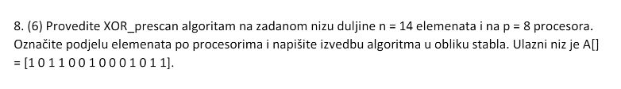
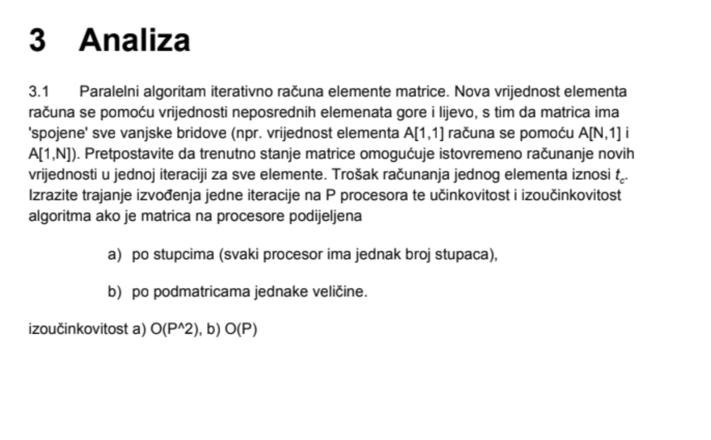
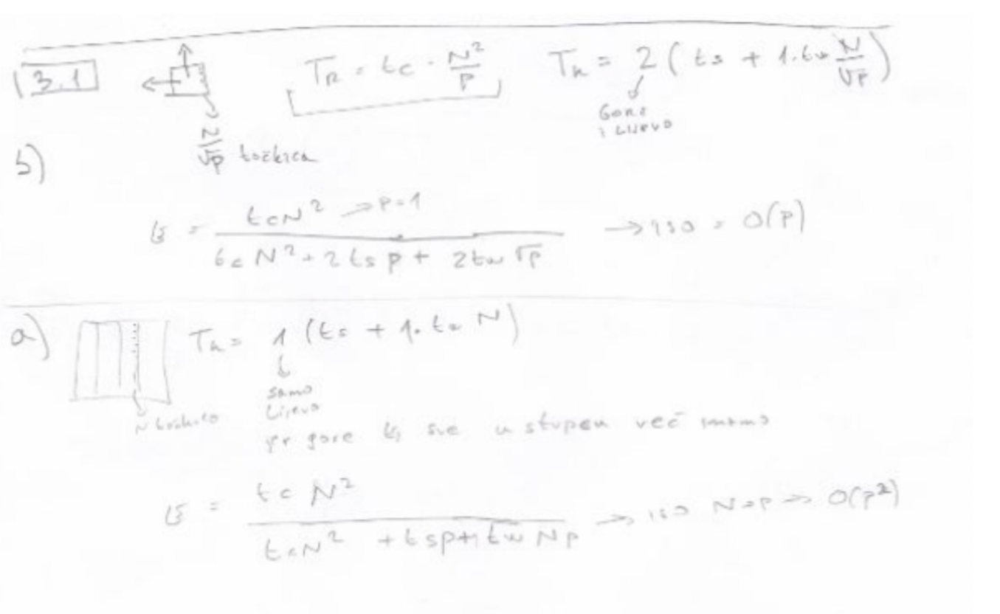

huhu Ja sam isto kao i ti shvatio, vidim da na ovoj slici u pdfu imaju ove dvojke uz tw koje kasnije nestanu. Mislim da je neka greska u toj slici.
Bisolvon Al cak je logicno da salje 2N, odnosno u b) 2N/korijen(P), kaj ne?
huhu Pogledo sam sada ponovo zadatak, mislim da je tocno postavljeno dakle pod a) imamo redove. U tom slucaju ove poruke lijevo i desno nam ne postoje jer su to vec sve nasi elementi. Salju se 2 poruke, susjedu iznad i susjedu ispod i svaka poruka ima 2N jer je “2 neposredna susjedna elementa”. pa to ispadne Tk = 2(ts + tw*(2N)). Pod b) je onda 4 poruke jer moramo slat svim susjedima a duljina stranice je onaj N/sqrt(P).
huhu Care to elaborate? U a) se šalju podaci dvama procesima - lijevi i desni. U b) se šalju lijevom, desnom, gornjem i donjem
gladiator Al kaj nije da saljem lijevi i lijevi-1 i desni i desni+1 (ako gledas kao da su stupci kak si ti napisao)
huhu kao prvo, da, retci
kao drugo, svaki proces dobije BLOK redaka. Dakle za rubne elemente on mora saznati ove koji su iznad njega i za to će kontaktirati proces koji je dobio retke iznad njega (isto to vrijedi i za ove dolje). Pretpostavka je da redaka ima barem dva puta više nego procesa. Dakle svaki proces mora napraviti dvije izmjene poruka.
Bisolvon Znaci zapravo ono kaj smo mi prvo mislili, bi bilo tocno, al onda nebi slali 2N podataka nego samo N? Pa je ovo drugo bolji nacin?
huhu Mislim da ne jer ako stavis pod a) Tk = 4(ts + tw*N) iz toga bi se reklo da se salju 4 poruke ali imamo samo dva susjeda kojima saljemo poruke.
Ako je netko 100% siguran kako treba neka napise, ja ovo kinda pogađam kako bi trebalo bit.
Bisolvon Opet mi nema logike kako 2 susjeda ako saljem najblizem i drugom najblizem sa svake strane.. Ova recenica je problem cini mi se “2 neposredna susjedna elementa u svakom od 4 smjera”
huhu Ta 2 neposredna elementa su kod istog procesa tj. susjeda.
Kako bi se riješio ovaj zadatak iz ispita?

Koji nam je neutralni element za xor? 🤔
Jaster111
0, jer
X xor 0 = X
Dragi prijatelj strojnog učenja aha pa da, tenks
BillIK gladiator može se i u O(\log N):
u skripti, prvi zadatak s analizom, zasto jer velicina poruke uzeta kao N/sqrt(P) a ne kao square(N)/P ? Moze li mi netko ovo objasniti opcenito mi nije bas jasna velicina poruke u zadacima
DnkCkv koji zadatak tocno?
Bisolvon  
DnkCkv Koliko ja shvacam ove zadatke tu se salju samo one tocke koje se nalaze na rubovima tog kvadrata. S obzirom da je stranica kvadrata N/sqrt(P) onda je to i velicina poruke. Dakle samo gledas koliko elemenata saljes nekome. Da se salju svi elementi za koje je zaduzen taj proces onda bi bilo N/sqrt(P) * N/sqrt(P) tj. površina tog kvadrata.
gladiator ovo je konveksna funkcija s plusevima kak to moze bit nula a da rjesenje nije negativan broj procesora?
𝐓𝐇𝐄 𝐒𝐄𝐂𝐑𝐄𝐓 - 𝐂𝐋𝐔𝐁 P * (10 + 500/P) + 12*(10 + 500/P) derivacija je 10 - 6000/P^2